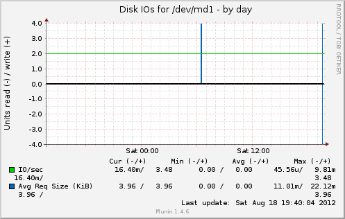

disk | |
|  | |
 |
|
Overview :: foodclub :: sakura.foodclub :: diskstats_iops |
|
diskstats_iops :: [ disk ] |
| |||||||||||||||||||||||
| Overview :: foodclub :: sakura.foodclub :: | |||||||||||||||||||||||
| This page was generated by Munin version 1.4.6 at 2012-08-18 19:40:13+0400 (MSK) |